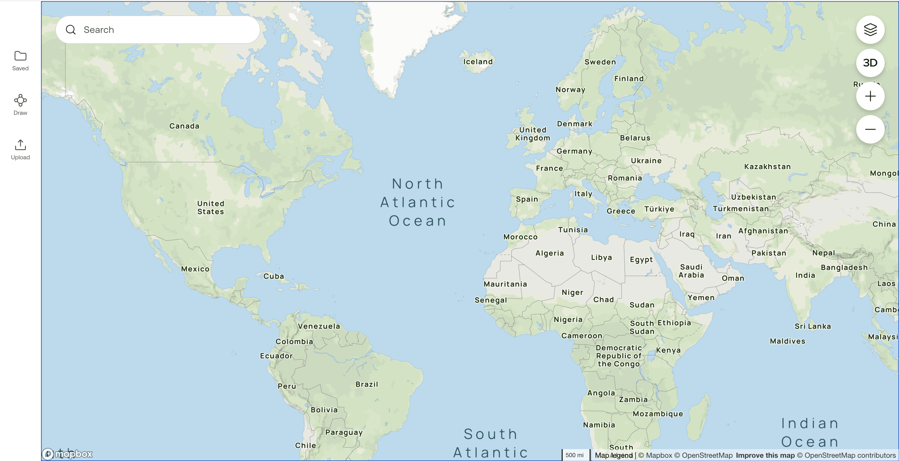
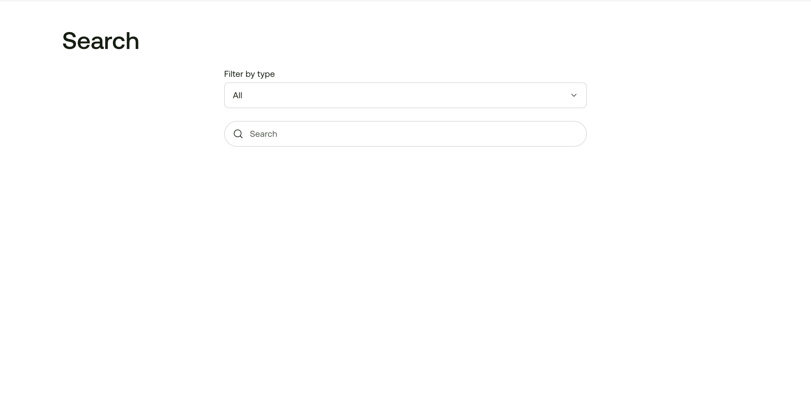
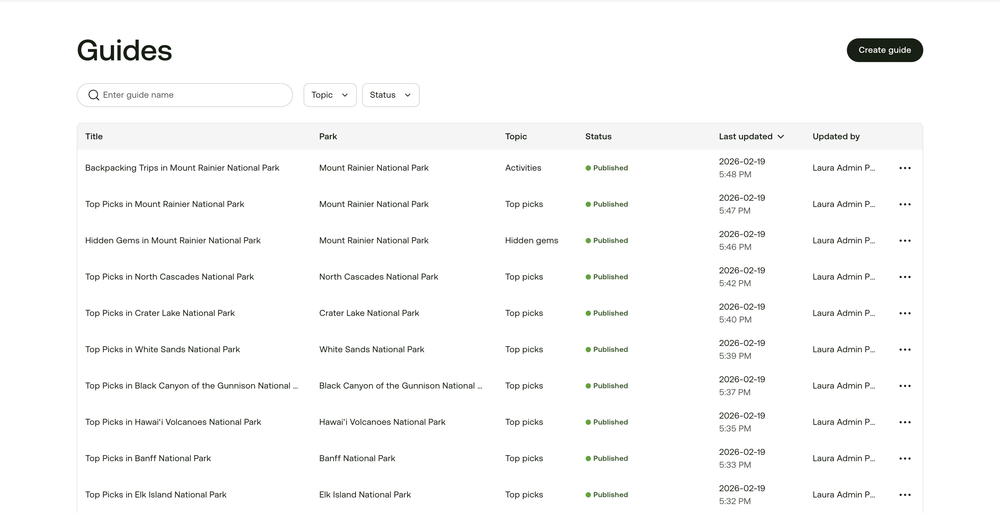

Tools
Search
Guides
Geo Contribute
News Hub
PLP Admin



Trail
—
State
—
Region
—
RSS Feed
—
View source article
Open in GeoContribute
Mark as reviewed
How was this alert handled?
✓ Alert added
✗ Alert not added
Why not?
Cancel
Save